Informs whether to trust AI-generated unit test coverage or adopt functional/behavioral TDD with Playwright as a check on it, since the talk argues AI-written unit tests can be self-affirming (green suite, unvalidated behavior)
This is our reading of how the planner, generator, and healer agents slot into red-green-refactor to counter self-affirming AI unit tests (ours).
“our COO Kyle Daigle tweeted that we're seeing about 275 million commits to the platform every week”
said at 01:02“This graph shares findings from that talk that's from a Stanford University study of 120,000 developers”
said at 02:33“this graph from the study actually shows us that clean code bases amplify AI gains and AI”
said at 02:33“though there was effective output increase of like 1%, AI didn't really improve the productivity from this team”
said at 03:37“like many things in this industry, TDD was pronounced dead in 2014. Um and one of the most common complaints”
said at 06:12“AI sometimes generates self-affirming tests. So, while the code coverage tests might pass and you your unit test suite is all green”
said at 07:44“when we're using Playwright with AI, it actually should speed up the full process of TDD for us”
said at 09:18“it's going to install for you three agent.md files. So, the first one is going to be a planner, second is a generator, and the third is a healer”
said at 10:20“commit your code before you actually get it to fix the test. Or, you know, commit before it starts to make changes to your code”
said at 16:35The self-affirming-test warning is the sharper claim here: it implies AI-generated coverage metrics can look healthy while silently validating nothing, which argues for functional/behavioral tests as a check on agent-written unit tests rather than a replacement for them (ours).
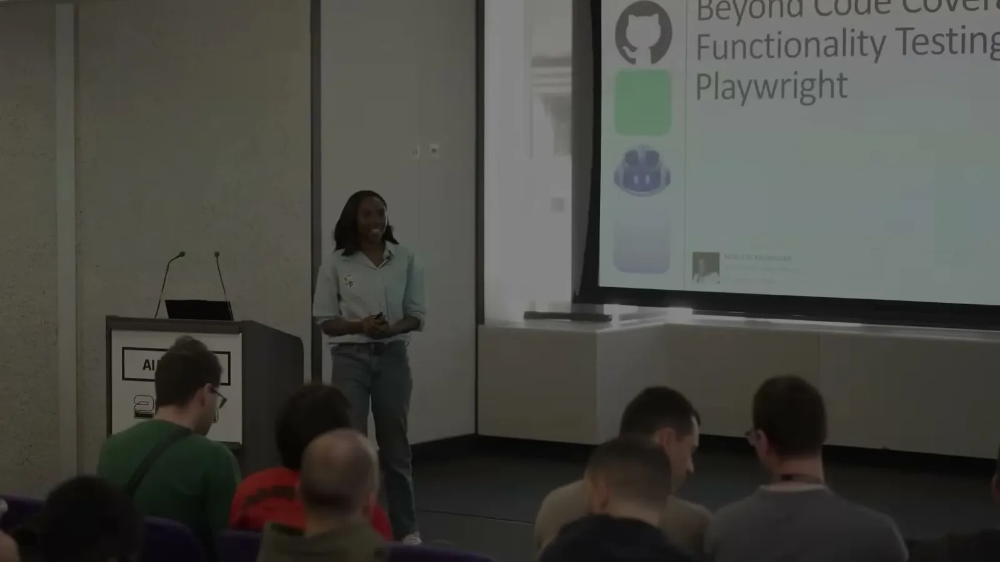
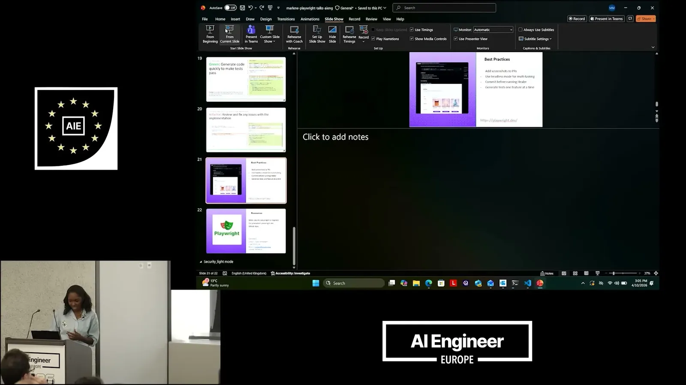
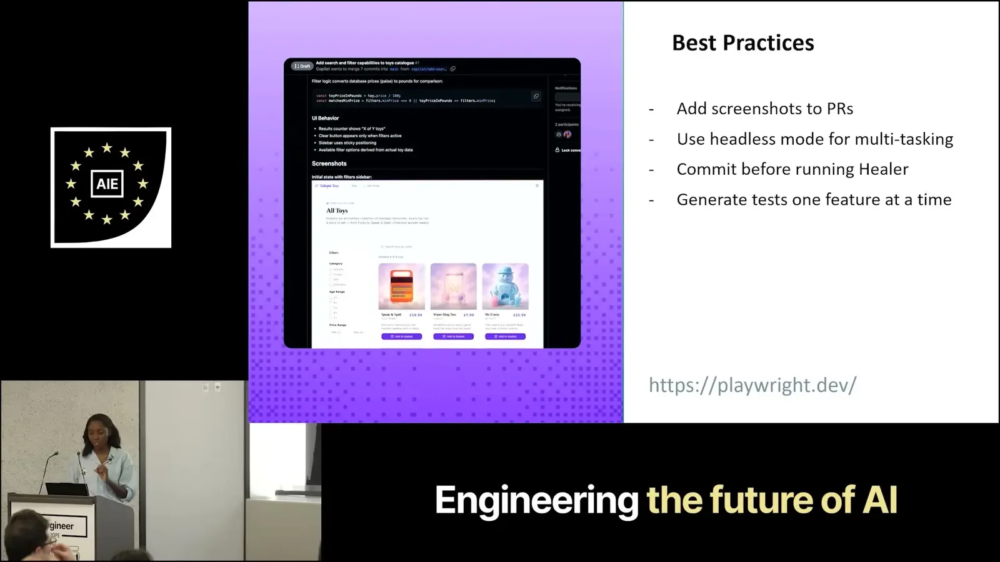
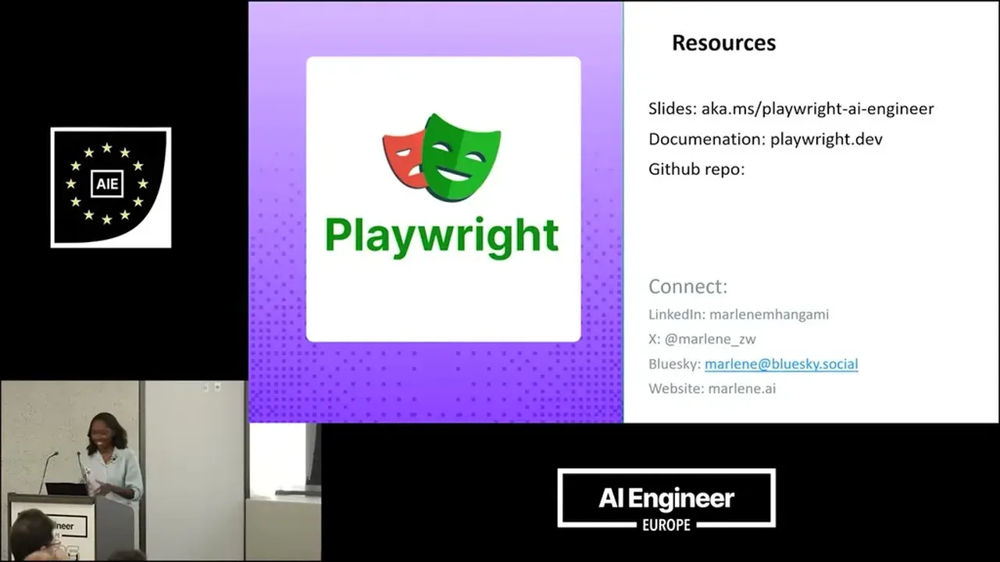
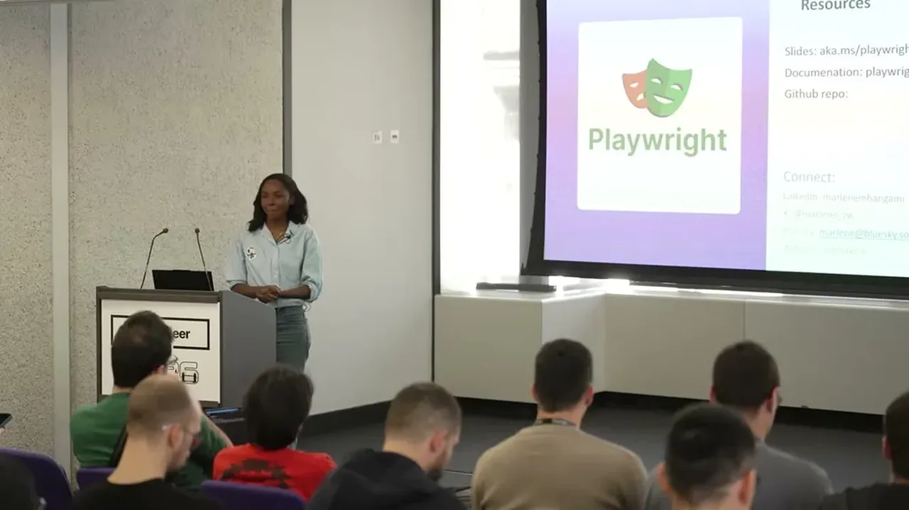
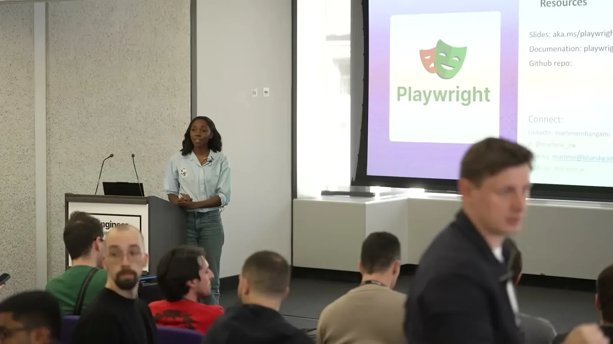
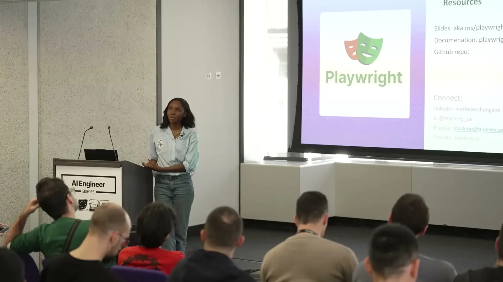
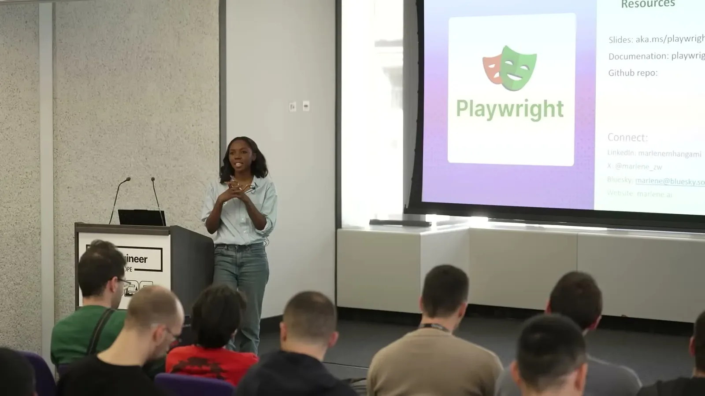
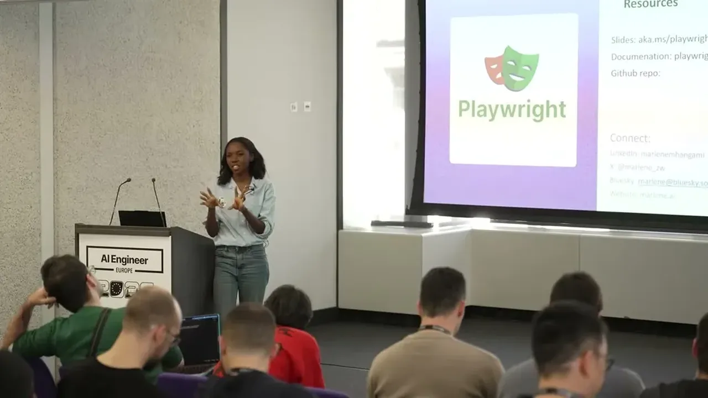
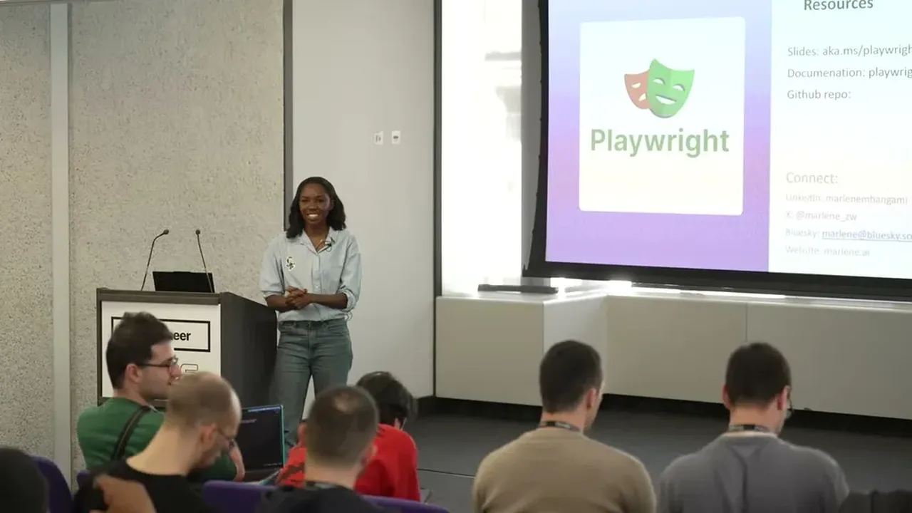
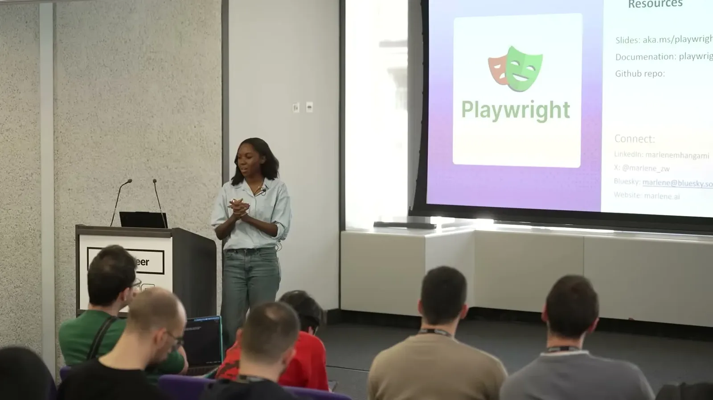
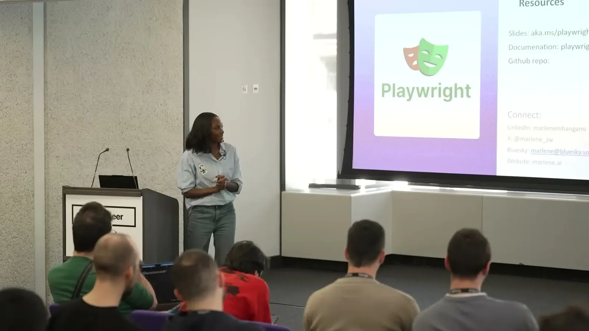
| Stance | Claim | t |
|---|---|---|
| asserts | GitHub's COO tweeted that the platform is seeing about 275 million commits per week, which the speaker extrapolates to roughly 14 billion commits by end of 2026. | 01:02 |
| asserts | A cited graph comes from a Stanford University study of 120,000 developers examining whether AI makes developers more productive. | 02:33 |
| asserts | The study found clean code bases amplify AI's productivity gains. | 02:33 |
| warns | A case study team using AI without guardrails saw more PRs but worse code quality, for an overall effective output increase of only about 1%. | 03:37 |
| asserts | TDD was pronounced dead in 2014, with a common complaint being that it over-focuses on unit test coverage rather than actual system behavior. | 06:12 |
| warns | AI sometimes generates self-affirming tests where the coverage suite passes and goes green without the system's actual behavior being validated. | 07:44 |
| recommends | Using Playwright with AI speeds up the red and green phases of TDD, freeing more time for the refactor phase. | 09:18 |
| asserts | Running the Playwright agents command installs three agent.md files: a planner, a generator, and a healer. | 10:20 |
| recommends | Developers should commit code before letting an agent attempt to fix a failing test, since without a commit the agent may not retain what happened previously. | 16:35 |
Machine-readable copy embedded in this page (script#ontology) and in the corpus ontology.